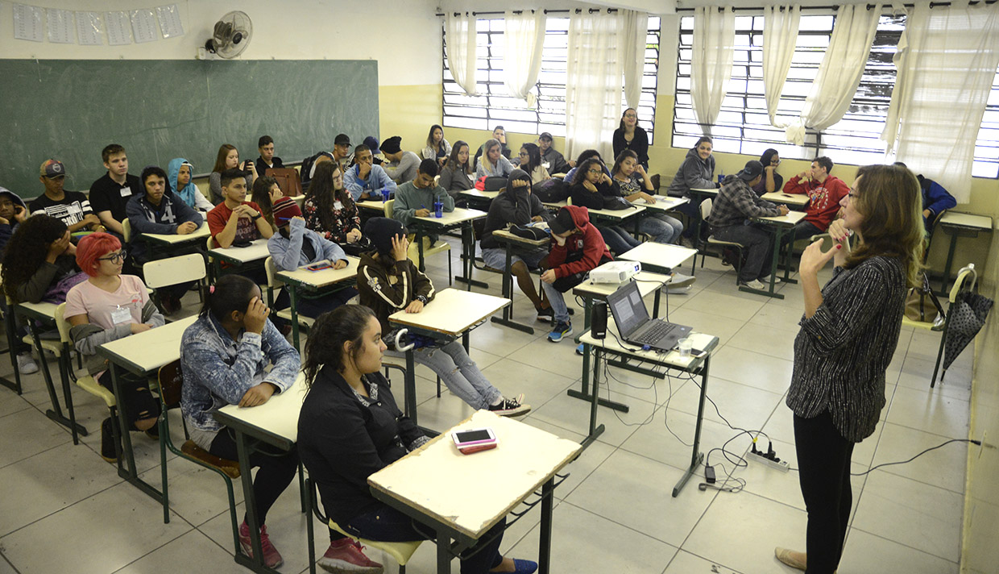
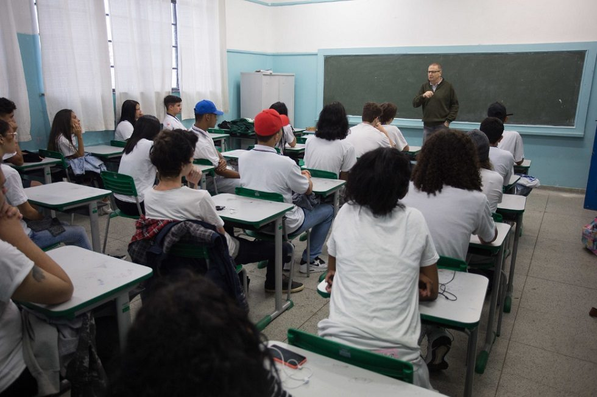
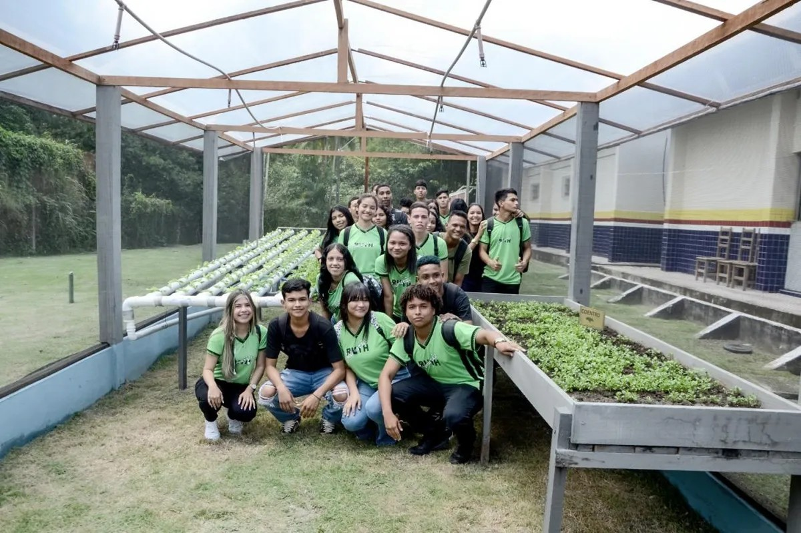
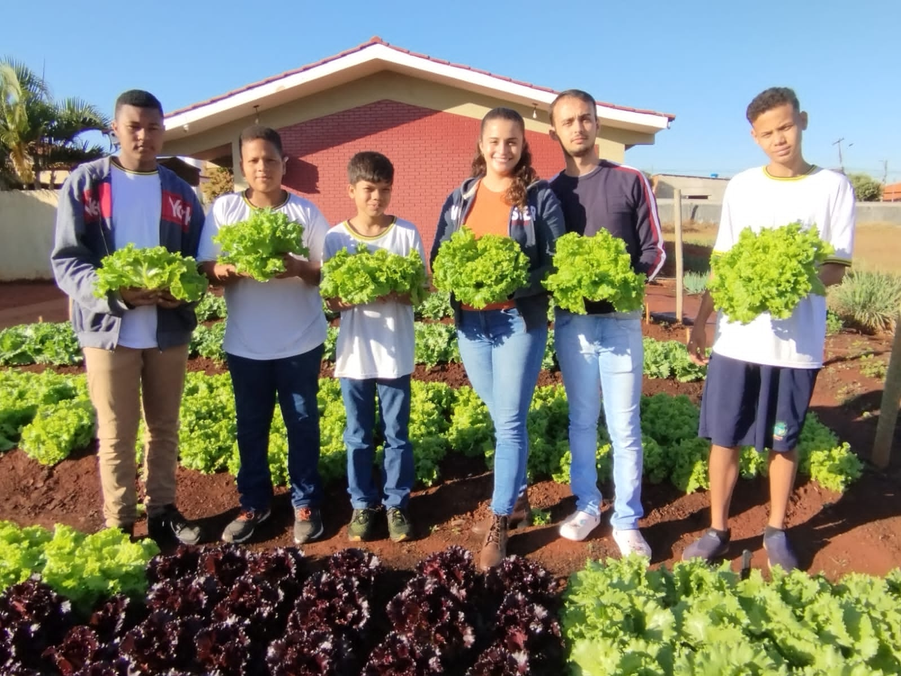
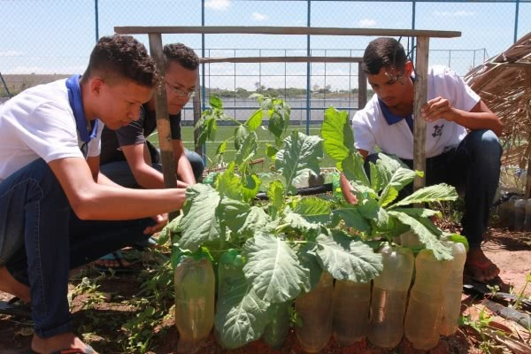
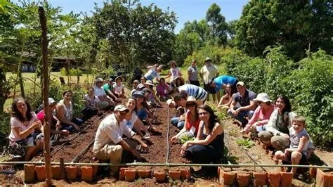
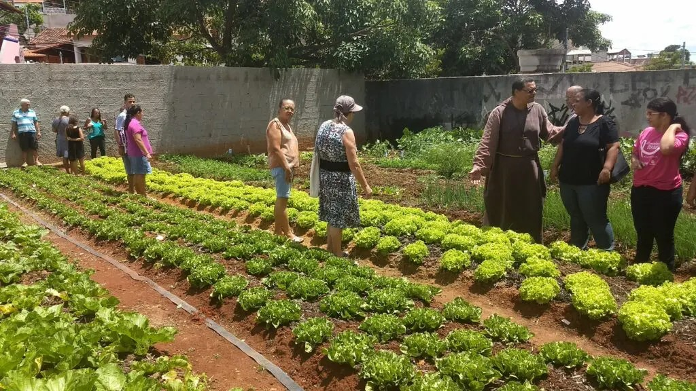
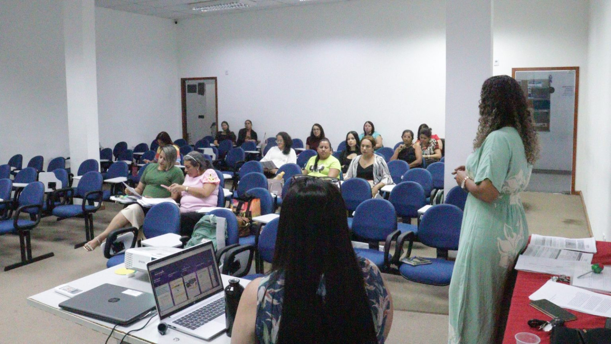
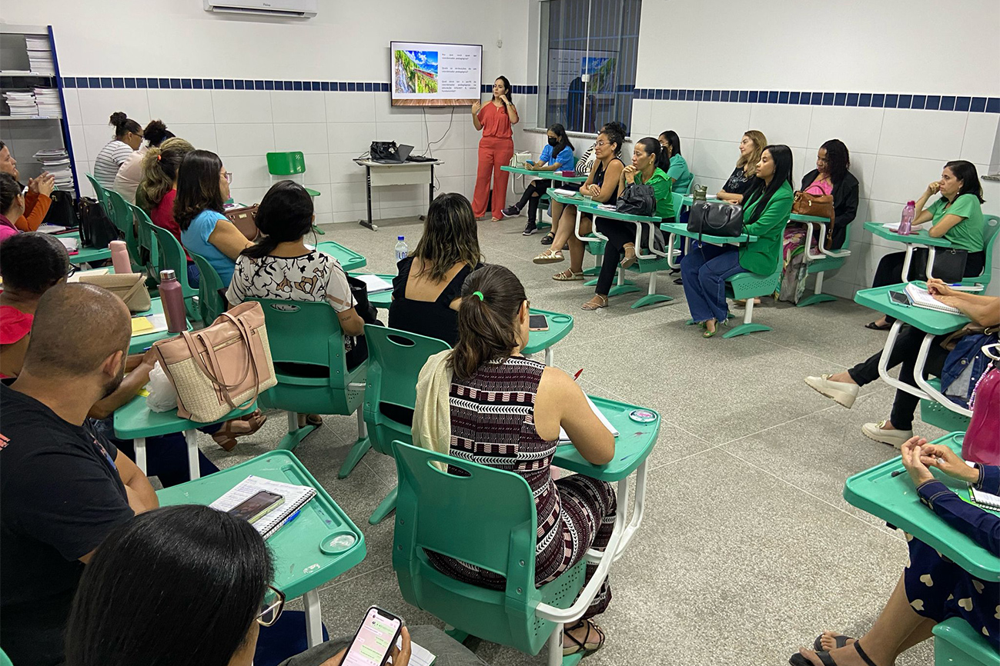

Centro Universitário Internacional UNINTER - RA 1855110
O projeto busca promover impactos sociais, ambientais e educacionais, fortalecendo o senso de comunidade e solidariedade, disseminando práticas sustentáveis e ampliando o conhecimento dos alunos sobre agricultura e responsabilidade social.
O projeto integra escola e comunidade, unindo teoria e prática para combater a fome e promover sustentabilidade. Os alunos tornam-se agentes de transformação social e ambiental.









Sua opinião é fundamental para validarmos o impacto do projeto na comunidade.